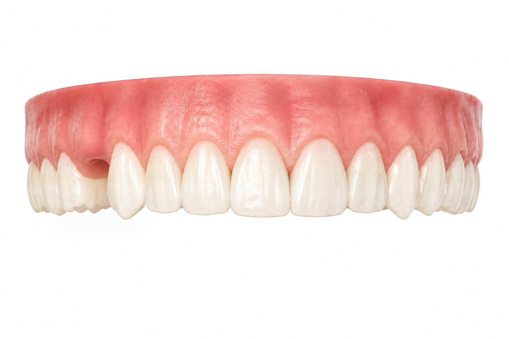
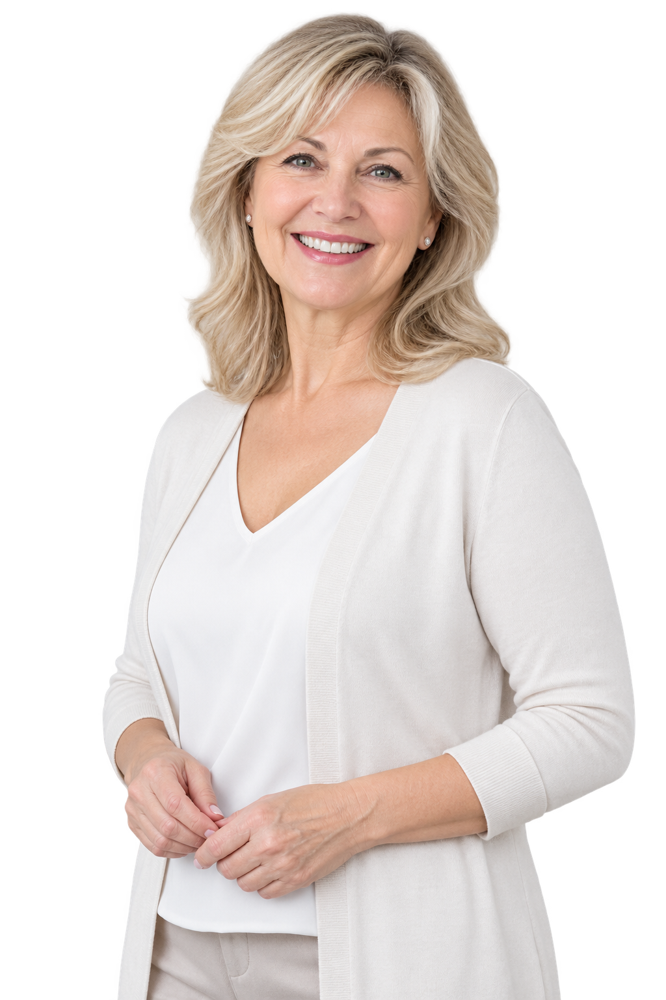
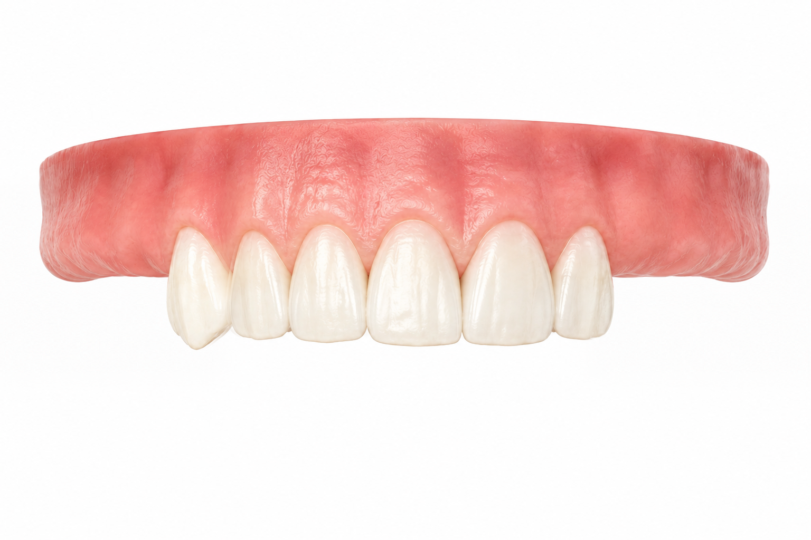
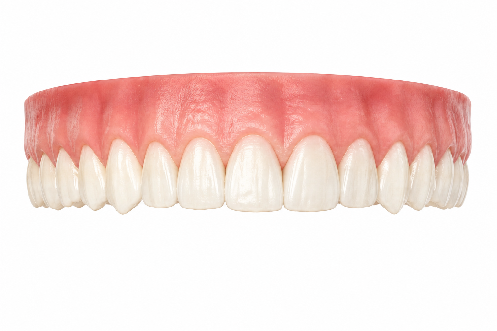
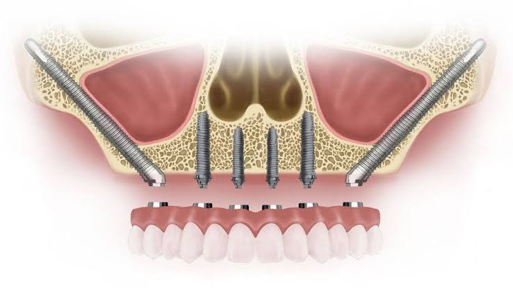

Не хватает 1–2 зубов, кости достаточно
Классическая имплантация Nobel Biocare (Speedy, Active, Replace, Parallel) — оптимальное решение для большинства случаев.


Единственный сертифицированный центр Nobel Biocare в регионе. Восстанавливаем зубы даже при сильной убыли костной ткани — без костной пластики, по технологии Zygoma.

Консультация хирурга-имплантолога — 1 000 ₽
После консультации вы получите план лечения и точную стоимость
Выберите вашу ситуацию — и узнайте, какая имплантация подойдёт именно вам
Классическая имплантация Nobel Biocare (Speedy, Active, Replace, Parallel) — оптимальное решение для большинства случаев.

Скуловая имплантация Zygoma — восстановление зубов без костной пластики и синус-лифтинга, даже при выраженной атрофии кости.



Протезирование по концепции All-on-4

Импланты с самоуплотняющейся резьбой, ускоренная стабилизация

Корневой имплант анатомической формы — подходит для большинства случаев

Простая и надёжная система, высокая первичная стабилизация в любых типах кости
45 лет клинической практики, 4 400+ научных публикаций
Поверхность TiUnite — приживаемость 99,3%
Индивидуальный номер каждого импланта — защита от подделки, можно проверить в личном кабинете производителя
Титан IV класса без примесей алюминия и ванадия
Пожизненная гарантия на импланты
Если костной ткани верхней челюсти недостаточно для установки обычных имплантов, а костная пластика и синус-лифтинг невозможны или нежелательны — решением становится имплантация Zygoma. Длинные импланты фиксируются не в альвеолярной кости, а в скуловой кости черепа, которая практически не подвержена атрофии.

Хирург-имплантолог, челюстно-лицевой хирург
Проводит операции по установке скуловых имплантов Zygoma в клинике «Подмосковье» Смотреть карточку врача

осмотр, 3D-томография, определение объёма костной ткани, от 4200 ₽
хирург предлагает оптимальный вариант: классическая имплантация или Zygoma, озвучивает точную стоимость
установка имплантов
постоянные или временные коронки, при Zygoma — часто в течение нескольких дней
Пожизненная гарантия производителя на замену импланта при отторжении
Поверхность TiUnite ускоряет приживление и нарастание костной ткани
Каждый имплант — в стерильной индивидуальной упаковке, одноразовое использование
Уход стандартный: чистка щёткой, нитью, ирригатором, профгигиена раз в полгода
Zygoma-импланты (скуловые импланты Nobel Biocare)
Это более длинные импланты (обычно 30–52,5 мм), которые фиксируются не в альвеолярной кости челюсти, а в скуловой кости (zygoma) — их применяют при сильной атрофии верхней челюсти, когда обычные импланты установить невозможно без костной пластики.
Важно: это общие ориентировочные цифры, а не гарантия — точный прогноз зависит от индивидуальной клинической ситуации, поэтому для конкретных рекомендаций стоит проконсультироваться с лечащим стоматологом-имплантологом.
Длительность операции по установке Zygoma-имплантов
Это сложное хирургическое вмешательство, требующее общей анестезии или глубокой седации, и по времени оно заметно дольше, чем установка обычных дентальных имплантов.
Факторы, влияющие на длительность:
Полное восстановление занимает от нескольких недель до 2–3 месяцев.
Точную длительность в вашем случае может назвать только хирург после осмотра и изучения КТ-снимков.
Да, разница будет — Zygoma-импланты значительно дороже классической имплантации. Вот основные причины и порядок величин.
Почему Zygoma дороже:
Дополнительно на итоговую стоимость влияет:
Важно: точные цифры зависят от клинической ситуации пациента — для точного расчёта стоимости лучше запросить смету после консультации и КТ-диагностики.
Операцию проводят с обезболиванием. В клинике также доступны седация и наркоз; подходящий вариант врач подбирает индивидуально.
Возможность рассрочки и условия оплаты уточните у администратора клиники.
Перед имплантацией хирург оценивает состояние здоровья. Ограничения могут быть связаны с:
Наличие заболевания не всегда означает отказ в имплантации. Некоторые ограничения можно устранить после подготовки. Решение принимает хирург по результатам обследования.
Администратор перезвонит и согласует дату и время приема